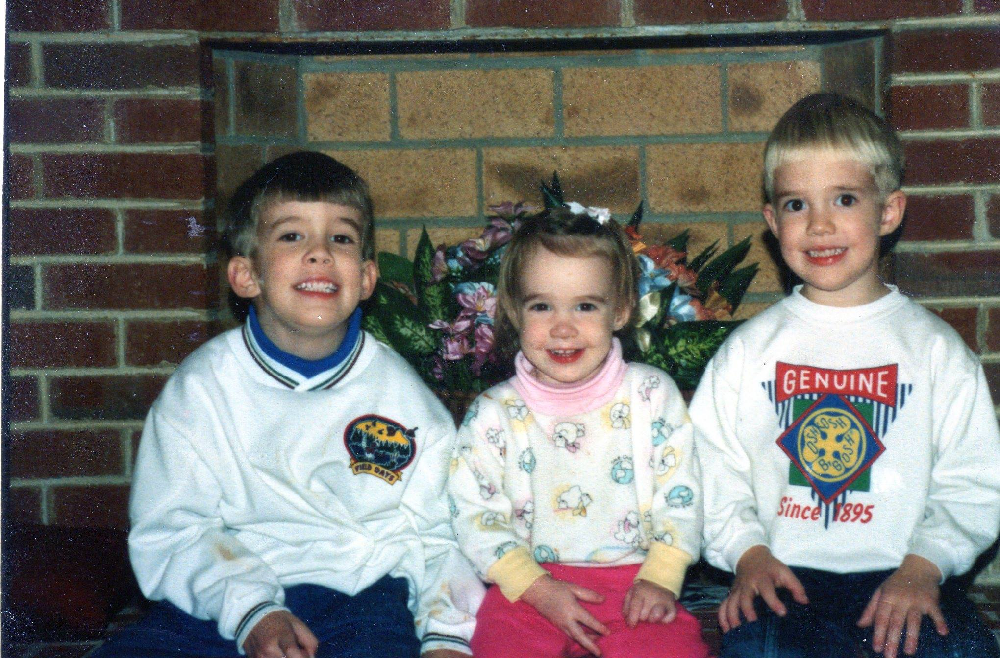

Software - Past and Present
Photo from a long time ago.
Computer Science Experiences
- I am a lifelong ball player - basketball, football, soccer, baseball, softball, volleyball, horseshoes, cornhole, high jump, running, bicycling. I mostly ride my bicycles now.
- I wrote my first program on an IBM 1600 using punched cards in January, 1974. I do not remember the programming language.
- I studied math in college. I enjoyed abstract math, and could have gone to UVA graduate school for math, but I did not have enough confidence in my skills / abilities.
- I took several CS courses in college. One was a computer architecture course where I learned assembly programming. Another was a compiler course, where I do not recall learning much; however, I did write a compiler later.
- I worked 34 years as a civilian software/systems engineer for the U.S. Navy.
- My time working for the U.S. Navy, I was primarily a maintenance software / systems engineer. We had large bodies of legacy systems and software. My job was to enhance the legacy systems / software.
- The maintenance programmer's creed - Read the code, not the comments.
- I have developed most every kind of software on many different computers.
- Operating Systems - real time.
- File Systems
- Network Stack
- Compilers
- Assemblers
- Linkers
- Real-time naval weapon control systems
- I have been teaching computer science at the University of Mary Washington since January 2012.
- I have been an adjunct, full-time fill-in, adjunct, full-time. Recently, I decided that I did not want to teach full-time and returned to being an adjunct.
- I have taught Introduction to Programming in Python, 2nd Programming Course in Java, Object-oriented Programming in Java, Discrete Math, Computer Architecture, and Operating Systems.
- I have taught several independent studies. One was a fancy Java program that "controlled" radiation of melanoma in eyes. The program did not really control. A student worked as an intern and had several videos of manually controlled radiation. We used his videos to create a prototype system.
- I have taken several UMW courses. I have taken Object-oriented Programming, Application of Data Bases, Data Mining, Computer Security, IT Infrastructure in the Cloud, and Web Development. This creates a fun dynamic. I am teaching some students while at the same time I am in a class with them.
- As part of my teaching Computer Architecture and Operating Systems, I am developing Charm, a system to help teach these subjects.